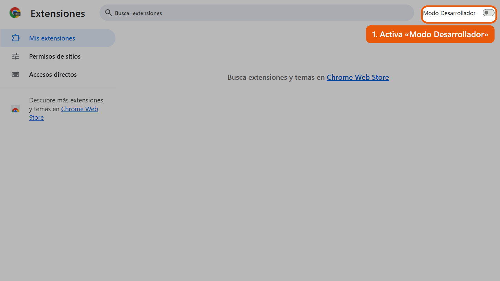
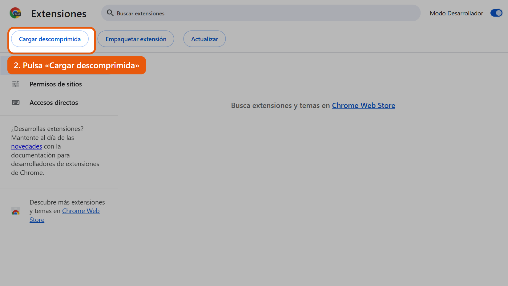
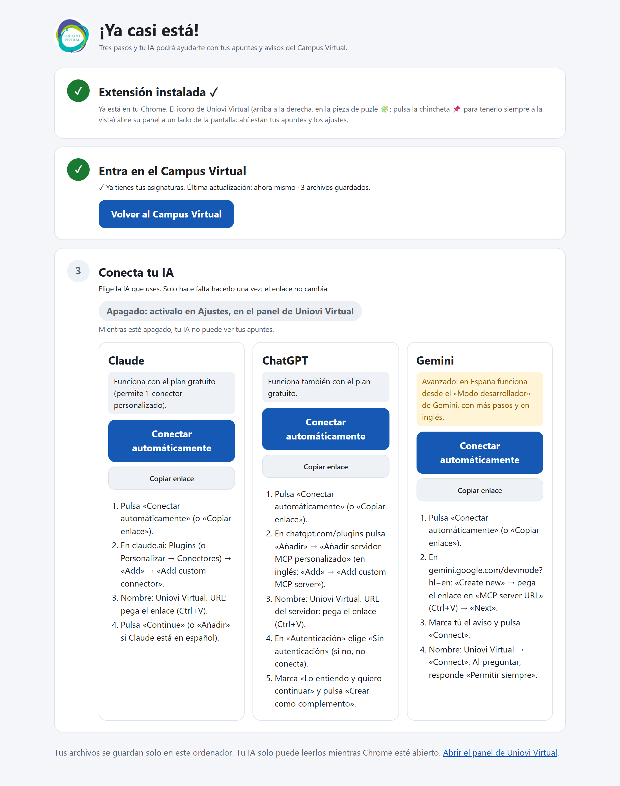

Uniovi Virtual
Conecta tu Campus Virtual con tu IA (Claude, ChatGPT o Gemini) para preguntarle por tus exámenes, entregas, avisos y apuntes.
Tus archivos se guardan solo en tu ordenador.
Necesitas: un ordenador (Windows o Mac) con Google Chrome. También vale Edge o Brave.
En Mac usa Chrome, no Safari. No funciona en el móvil, aunque sí puedes preguntar a tu IA desde el móvil si Chrome está abierto en tu ordenador.
⬇ Descargar
1. Instalar (2 minutos)
- Descomprime el zip y guarda la carpeta en Documentos. No la borres después: Chrome la usa.
- Windows: clic derecho en el zip → Extraer todo → elige Documentos.
- Mac: doble clic en el zip y mueve la carpeta
uniovi-virtual a Documentos.

- En Chrome, escribe
chrome://extensions en la barra de direcciones y pulsa Enter.
- Activa Modo desarrollador (arriba a la derecha).

- Pulsa Cargar descomprimida y elige la carpeta
uniovi-virtual de Documentos.
En Mac, si pregunta por acceso a Documentos, pulsa Permitir.

- Listo: aparece Uniovi Virtual y se abre una página de bienvenida.

Consejo: fija el icono con la pieza de puzle 🧩 de arriba a la derecha → chincheta, para tenerlo siempre a mano.
2. Sincronizar el campus
Entra en el Campus Virtual con tu usuario, como siempre.
La extensión copia tus asignaturas, avisos, fechas y apuntes. La primera vez tarda unos minutos: deja la pestaña abierta.
Después se actualiza sola cada vez que entras.

3. Conectar tu IA (una sola vez)
En la página de bienvenida (o en el icono de la extensión) elige tu IA y pulsa Conectar automáticamente:
se abre tu IA con los datos ya rellenados y solo tienes que pulsar su botón de confirmar.
Si no funciona, pulsa Copiar enlace y pégalo a mano:
- Claude (gratis, recomendado): en claude.ai → Personalizar → Conectores → Añadir conector personalizado.
Nombre:
Uniovi Virtual, URL: pega el enlace → Añadir.
- ChatGPT (también gratis): en
chatgpt.com/plugins pulsa + → Add custom MCP server.
Nombre: Uniovi Virtual, URL: pega el enlace, marca que confías en la aplicación y créala.
- Gemini (avanzado, en inglés): abre
gemini.google.com/devmode → Create new →
pega el enlace en MCP Server URL → Next → marca el aviso → Connect → nombre → Connect.
En el chat escribe @Uniovi Virtual y, cuando pregunte, responde Permitir siempre.
Su plan gratuito se agota rápido.
Importante: tu IA solo puede leer tus apuntes mientras Chrome esté abierto en tu ordenador.
El enlace es personal: no lo compartas.
4. Pruébalo
Pregúntale a tu IA, por ejemplo:
- «¿Qué exámenes y entregas tengo este mes?»
- «¿Hay avisos nuevos en mis asignaturas esta semana?»
- «Hazme un resumen del tema 3 de Derecho Civil»
- «Hazme 10 preguntas tipo test sobre el tema 2»
5. Mis apuntes
Pulsa el icono de la extensión → Mis apuntes para ver todos tus archivos del campus por asignatura,
buscar dentro de ellos y abrir dos a la vez (por ejemplo, ejercicios y soluciones).

Si algo no funciona
- La IA dice «Uniovi Virtual no está conectado»: abre Chrome en tu ordenador y espera unos segundos.
- La IA no encuentra nada: entra una vez en el Campus Virtual y espera a que termine de sincronizar.
También puedes pulsar Sincronizar ahora en el icono de la extensión.
- «Conectar automáticamente» no hizo nada: usa Copiar enlace y pégalo a mano (paso 3).
- Crees que alguien tiene tu enlace: icono de la extensión → Opciones avanzadas → Cambiar enlace,
y pega el nuevo en tu IA.
- Otra cosa: manda una captura a quien te pasó esta página.
Actualizar
Si la extensión avisa de una versión nueva: descarga el zip de esta página, descomprímelo encima de la misma carpeta de Documentos
(reemplazando los archivos) y pulsa ⟳ en chrome://extensions. No pierdes nada ni tienes que volver a conectar tu IA.
Desinstalar
En chrome://extensions pulsa Quitar en Uniovi Virtual y borra la carpeta de Documentos.
Se borran todos los datos que guardaba. Quita también el conector en tu IA.
Privacidad
- Tus archivos y datos del campus se guardan solo en tu ordenador, dentro de Chrome.
- Cuando preguntas, tu IA recibe solo los fragmentos que necesita para responder.
- Las preguntas pasan por un pequeño puente (Cloudflare) que no guarda nada.
- Tu contraseña del campus nunca sale de tu navegador: la extensión usa tu sesión abierta.
- Si no quieres que tu IA use tus chats para entrenar, desactiva «mejorar el modelo» en sus ajustes.
Proyecto no oficial, hecho por un estudiante. No está afiliado a la Universidad de Oviedo.
Código fuente.